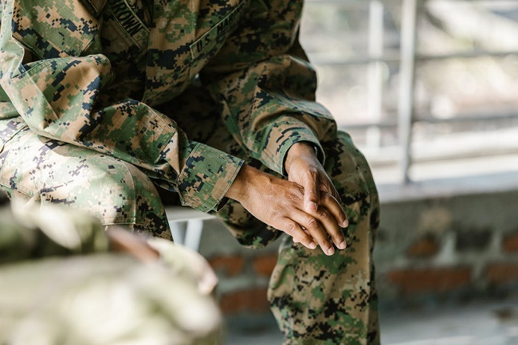

国防后备连
国防后备连
退役服务
心理咨询
发布人：许豪文 发布时间：2023-06-05
爱国主义教育兴起，越来越多的功勋、老兵出现在短视频平台，出现在大众的视野。我们也部分地了解了一些真相。细心的人们已经 发现，这些老兵的情绪反应并不简单。即便大半生已经过完，他们在回忆起当年的一些事件、人的时候仍然会情绪崩溃。现实的残酷 并不如电影作品或者历史课本当中所呈现的那样。他们面临了什么样的心理问题，心理咨询又可以怎样帮到他们？
一、退伍老兵的心理健康问题有多普遍
不同经历的老兵心理健康问题发生的概率是不一样的。一般来说，经历过重大伤亡事件的患有创伤后应激障碍（PTSD）的概率大约 是1/4。这并不意味着其他3/4的人没有问题，只是没有达到PTSD的程度或者是以其他的形式表现出来。创伤之后应激障碍、抑郁和 焦虑是最常见的。
二、这些疾病的常见症状是什么？
家庭成员应意识到退伍老兵正在从心理上远离朋友和家人，他们很难或完全不能顺畅地参与到家庭成员的生活中去，享受他们的快 乐。他们的内心世界和其他人的内心世界是不一样的。
在工作或其他日常生活活动之中，比如开车、做公交、看电影等，他们会遇到困难。尤其是对于患有创伤后应激障碍的人而言。做 噩梦以及发呆、喃喃自语也是一些常见的症状。
三、向退伍老兵提供心理咨询的时应该注意什么
1、总的来说，他们会为自己的军装生涯感到自豪，但他们可能对战争或当时的当局有着非常复杂的感受。
2、耻辱感是很普遍的。军人的荣誉感让许多人不愿意寻求心理咨询的帮助。
3、伤痛对于他们而言是一种铭记。忘记伤痛对他们而言意味着背叛，所以不是所有伤痛都需要治愈。心理咨询师在工作的时候，需要 探讨伤痛对于他们的意义以及咨询的方向。
四、退伍老兵的心理咨询策略
1.在体检中把心理咨询包装成体检会谈的形式，他们会喜欢闲谈。
2.社区建立休闲娱乐中心，让社工参与到他们的生活中去，和其中需要心理咨询的人建立好关系之后有针对性地开展咨询服务。
3.在老兵中培养心理健康工作人士，提供同侪评估慰问。
4.采用团体工作的方式更为高效可行。
此外，建立健全心理健康技术人员培养体系、引入优秀的心理咨询师、建立心理咨询室和相关硬件设备也是保障上述工作顺利开展的重要支持性条件。